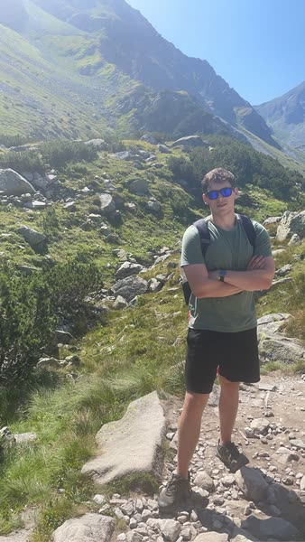

Poznaj nasz zespół sprawdzonych specjalistów. Każdy z nich to pasjonat swojej dziedziny z udokumentowanymi wynikami.

👨🏫Student Informatyki na AGH. Ponad 4-letnie doświadczenie w korepetycjach z matematyki i informatyki.
Student Informatyki na AGH. Specjalizuje się w pomocy uczniom w zrozumieniu zasad fizyki i matematyki.
Student Informatyki na AGH. Ma kilkuletnie doświadczenie w korepetycjach z matematyki i przygotowaniu do matury.
Dołącz do naszego zespołu korepetytorów. Elastyczne godziny, własni uczniowie, wsparcie administracyjne.